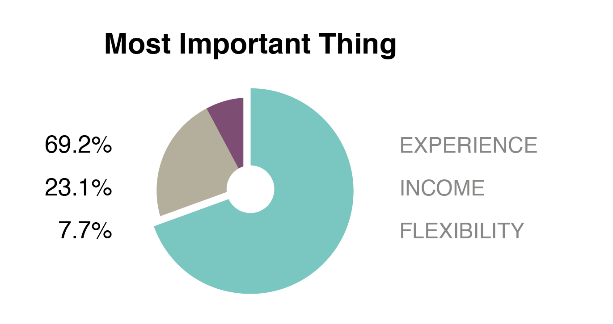

PROBLEM
Shrinking 18 to 24-year-old job seeker demographic on the company’s website. There was no previous long term research investment to better understand this demographics online search behavior and motivators when looking for a new job.
EXAMPLE ASSUMPTION
Student Job Seekers are unaware of this company/brand.
Validated/Invalidated
Validated
PROCESS
I first consulted our analytics team to gather baseline statistics on this group’s usage of our site to form accurate hypothesis and assumptions. Through a series of online and in-person surveys, interviews and focus groups, I was able to validate/invalidate many assumptions our company had about this group of job seekers. This research spanned nearly 3 months, as I spoke to nearly 50 student job seekers via interview and reached many more via survey. These sample of student job seekers were from all across the US with a concentration of students in Atlanta and Chicago due to accessibility.
FINDINGS/OUTCOMES
From this research, I was able to create a set of student job seeker personas and present them to my fellow researchers. I found that a majority of students fell into one persona in particular. That majority persona was presented to the business and ultimately incorporated into the company’s consumer personas. This student persona and resulting journey map is now being used to make informed business and design decisions for the company.
- Time Frame
- May 2014 - September 2014
- Role
- Principal Researcher
- User Recruiter
- Project Type
- Individual
PROJECT DETAILS